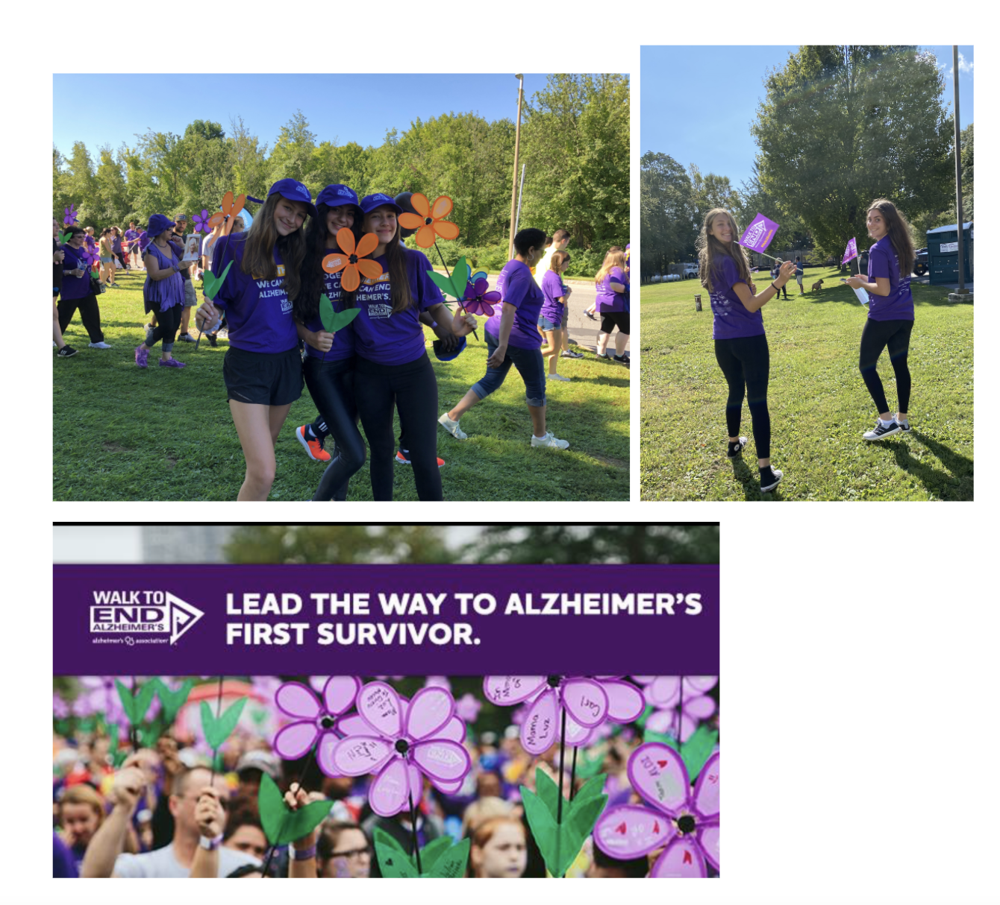

The Growth and Awareness Group for Alzheimer’s (GAGA) club
44 million people worldwide suffer from Alzheimer’s which is a devastating disease that eventually leads to serious dementia. The BHHS GAGA club raises awareness of Alzheimer’s, raises money for the Alzheimer’s Organization, visits local assisted living homes like the Bristal Armonk, and participates in the annual Walk to End Alzheimer’s at Westchester Community College. The Alzheimer's Association leads the way to end Alzheimer's and all other dementia by accelerating global research, driving risk reduction and early detection, and maximizing quality care and support. Our club hopes to help them in their mission to reach a future without this horrific disease. Co-presidents Remi Matza (matzar23@byramhills.net) and Emily Stangel (stangele23@byramhills.net) led by advisor Ms. Dellacioppa (adellacioppa@byramhills.net) and co-advisor Mrs. Congolessi (lcongolessi@byramhills.net) are looking forward to creating a fun in-person club environment with students who are passionate about making a difference. We will have many other leadership opportunities open for those interested. We hope to see you all at our club meetings, and if not, at the walk on October 3rd!
We meet every other Wednesday from 2:30-3:00 in room 322. If you have to leave early for sports we totally understand!
Follow our instagram @bhhs.gaga for updates on what we do, and check out our team page on the Alzheimer’s website.
